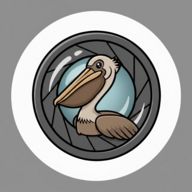

Initializing...
Not detecting
⏸
⏹
Stop & Save
📁
Review
0
⚙
Settings
✕
Show debug logs
Video bitrate
1 Mbps (~7 MB/min)
2.5 Mbps (~18 MB/min)
5 Mbps (~37 MB/min)
8 Mbps (~60 MB/min)
Detection sensitivity
Very high (more false positives)
High
Medium
Low (only obvious birds)
Scan detail
1x1 (fastest, large birds only)
2x2 (balanced)
3x3 (best for small birds)
Clear cache & reload [dev only]
Clear
v11
←
Recorded Clips
0 clips
No clips recorded yet
←
Playback
⬇
Download
🗑
Delete

Welcome to Bird Watcher
How it works:
Point your camera at a bird feeder
App auto-detects birds using AI
Recording starts when a bird appears
Stops 10 seconds after bird leaves
Privacy:
Completely local - nothing sent to servers
Videos saved on your phone only
Save to Photos from the Review page
Tips:
Drag the detection zone to your feeder
Small birds are detected using tiled scanning across the full frame
Tap pause button to stop detecting
Got it!